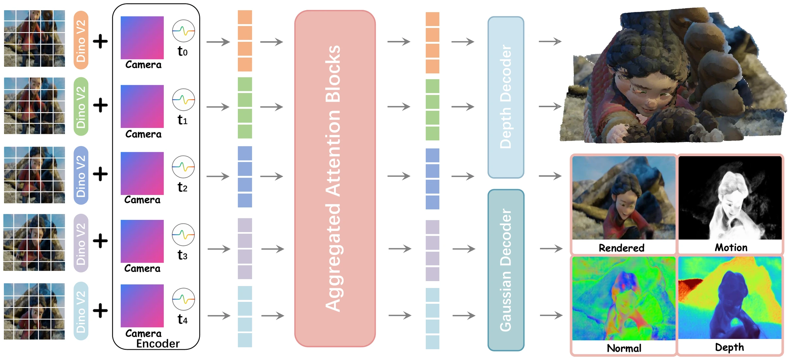

NeurIPS 2026
GAMMAA Feed-Forward 4D Gaussian Reconstruction Model for Novel View Synthesis of Monocular Videos
Rendered from the 4D Gaussians that GAMMA predicts from monocular videos. Inputs and more results are below.
Abstract
We present GAMMA, a feed-forward model that reconstructs 4D Gaussian Splatting from monocular videos, enabling dynamic novel view synthesis in real-time. Most existing approaches for dynamic scene modeling require multi-view videos as input or costly per-scene optimization. In contrast, GAMMA learns a unified 4D scene representation from monocular videos and directly predicts 4D Gaussian primitives within seconds. The key insight of GAMMA lies in its unified Gaussian reconstruction model, which jointly estimates temporally consistent geometry, appearance, and motion from the input video. We train GAMMA on a mixture of synthetic and real-world videos, and it reconstructs an input clip in a single forward pass without per-scene optimization. The reconstructed GAMMA representation supports interactive scene exploration via real-time rendering across timesteps and local viewpoints. Extensive experiments demonstrate that GAMMA outperforms existing methods in both reconstruction fidelity and efficiency.
Method
GAMMA takes a monocular video with known cameras and predicts a set of 4D Gaussians in one forward pass. A shared transformer backbone reads all frames together, and two heads decode its features: a depth head that places the Gaussians and a Gaussian head that predicts everything else.

Backbone
Each frame is encoded by a pretrained DINOv2 encoder. The camera rotation, the translation direction and a per-pixel ray-direction map are embedded and added to the image features, together with a sinusoidal encoding of the timestep. The tokens of all frames then pass through 24 transformer layers that alternate between attention within each frame and attention across all frames, so features from different timesteps interact in both directions.
Two heads
The depth head is inherited from MapAnything, which was pretrained on large-scale 3D reconstruction data. It predicts a depth map for every frame, and unprojecting each pixel with its camera gives the centers of the Gaussians. The Gaussian head predicts the remaining attributes of each Gaussian: scale, rotation, opacity, color, timestep, lifespan, and linear and angular velocity.
4D Gaussians
Each primitive is a flat 2D Gaussian disk, as in 2DGS, so it carries an explicit surface normal. Its timestep marks when it is most visible, and its opacity fades in and out around that timestep at a rate set by its lifespan. Within its lifespan, the disk moves with a constant linear and angular velocity.
Two-stage training
Without a constraint, the network drifts toward per-frame reconstruction: short-lived Gaussians flicker in and out instead of moving. Stage 1 therefore penalizes short lifespans for all Gaussians, which pushes the model to explain dynamics with coherent motion. Linear motion cannot represent sudden stops or turns, so Stage 2 keeps the penalty only on the 90% longest-lived Gaussians in each forward pass and lets the remaining 10% end early at motion discontinuities.
Training combines L1, SSIM and LPIPS rendering losses, a depth loss and velocity regularization. Depth is supervised with ground truth, or with MoGe-2 pseudo-depth for datasets without it, and the training videos mix synthetic and real-world footage.
Results
All results are produced by GAMMA from monocular videos, without per-scene optimization. Click a video to pause it.
Novel views on DAVIS
None of the DAVIS videos is in the training set. In each pair, the left video is GAMMA's rendered RGB, and the right one renders the same reconstruction from a moving novel viewpoint.
Bullet time
The input on the left is held at one moment, and GAMMA renders that moment from a moving camera on the right.
Depth and normals on DynamicReplica
GAMMA's depth maps keep sharp boundaries, even around moving limbs, and its normal maps capture fine local geometry.
BibTeX
@inproceedings{zhang2026gamma,
title={{GAMMA}: A Feed-Forward {4D} Gaussian Reconstruction Model for Novel View Synthesis of Monocular Videos},
author={Zhang, Weiqi and Zhou, Junsheng and Zhang, Xuancheng and Fang, Juntong and Chen, Zequn and Di, Donglin and Liu, Yu-Shen},
booktitle={Advances in Neural Information Processing Systems (NeurIPS)},
year={2026}
}